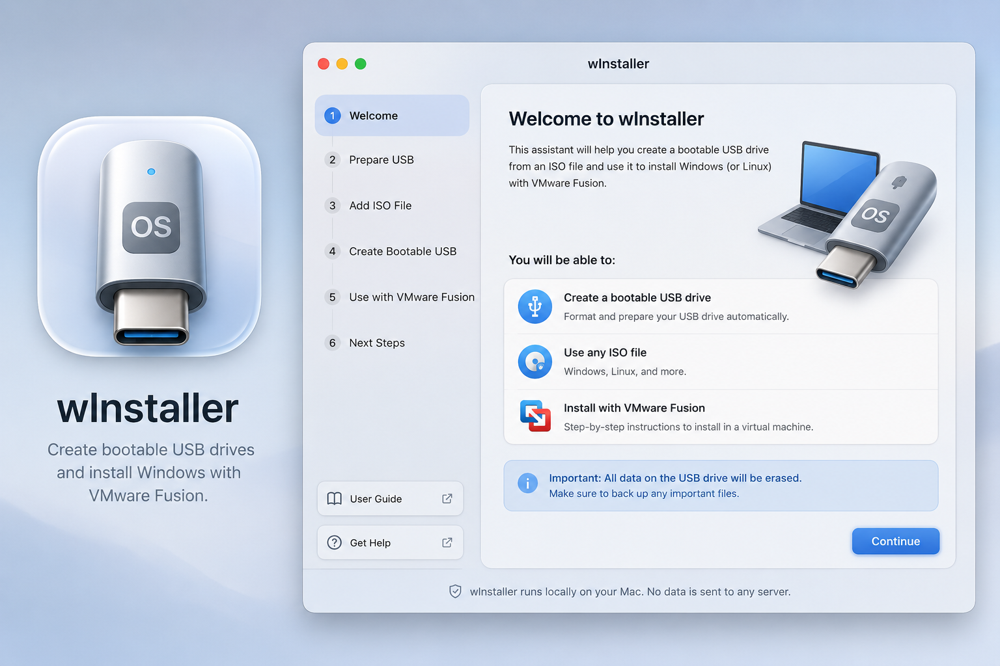

A calm, native assistant for building bootable Windows and Linux USB installers — on macOS, Windows, and Linux. No telemetry, no uploads, everything runs locally.
Creating a Windows or Linux installer USB usually means a brittle chain of Terminal commands: find the right disk, erase it, mount an ISO, copy files, split oversized Windows images, and hope the result actually boots. One mistake and you've erased the wrong drive, or produced media that looks complete but doesn't work.
wInstaller exists to make that workflow feel like a first-party assistant instead of a shell script you're afraid to run. It explains what it found, asks before anything destructive happens, validates the result, and never leaves this machine.
"Destructive actions are sacred. The app must slow down, name the selected drive, show capacity and identifier, and require explicit confirmation." — from wInstaller's design principles

wInstaller is built and maintained by Pedro Brito.
wInstaller is free to use, share, modify, and fork for any noncommercial purpose, including by individuals, students, IT professionals, nonprofits, and schools — forks must stay under the same noncommercial terms.
Commercial use requires a separate license — see COMMERCIAL-LICENSE.md for how to request one, or read the full LICENSE.md.